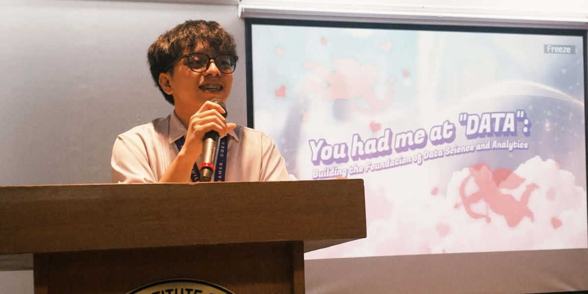

Data science student who turns data into decisions.
Fourth-year Data Science and Analytics student at T.I.P. Manila, building forecasts, models and dashboards. Looking for a data-related internship.
- Studying
- BS Data Science & Analytics
- Standing
- 4th year, GWA 1.95 (1.0 is highest)
- Based in
- Cainta, Rizal, Philippines
Selected projects
Each one started with a question someone needed answered. Open a project for the method and result.
Climate-urban vulnerability index for five Philippine cities
Climate and urban analytics
Which Philippine cities are most vulnerable to climate hazards, and do the rankings hold up under different assumptions?
A Hazard-Exposure-Poverty Gap index built from PAGASA, PSA and NDRRMC data, using min-max normalization and equal-weighted scoring, with sensitivity analysis on alternative weights. Aligned with SDG 11 and SDG 13.
A what-if simulator and an interactive dashboard (the Ligtas resident app and a Command Center) to help local governments prioritize resilience investment. Shortlisted as a national finalist in ASEAN Data Science Explorers 2026.
Forecasting senior high school enrollment for DepEd
Forecasting
How many classrooms and teachers will NCR senior high schools need over the next three years?
Facebook Prophet on historical NCR enrollment, inside a PHP and Python system with data validation, interactive charts and CSV/PDF reports.
Reported accuracy of 80% or higher (MAPE of 20% or lower). The forecast converts directly into classroom and teacher requirements.
Machine learning on school facilities and student motivation
Classification, clustering
What shapes student motivation, and which model classifies it best?
Decision Tree, Random Forest and Naive Bayes compared against K-Means, with PCA for 2D and 3D cluster views.
Random Forest and Decision Tree reached 100% accuracy on this dataset. That result is specific to this data, not a general claim.
Global retail performance and profitability
Business intelligence
Which business segments are underperforming, and why?
Power BI analysis of more than 51,000 retail records.
An interactive profit-by-region dashboard showing how pricing, discounts and shipping costs affect margin.
Customer segmentation for high-end products
Data mining
Which customers should a high-end product target?
SQL data warehousing on AdventureWorksDW2019, time-based feature engineering, Python and Power BI.
Regional and customer-level sales trends to guide targeting.
Factors affecting student academic performance
Statistical research
Which demographic and socioeconomic factors affect how students perform?
Exploratory analysis, multiple linear regression, T-tests and ANOVA on 1,000 observations.
A quantified effect for each factor, presented with correlation heatmaps and boxplots.
School resource management system
Software engineering
How can a school department track and allocate shared resources reliably?
Java with object-oriented design, custom data structures, role-based access and a Swing/AWT interface.
Real-time inventory, transaction logging, check-in and check-out, and automated reports. Logging every transaction is what makes later analysis possible.
HR chatbot for employee support (capstone)
In progress since July 2026
How can employees get accurate answers from HR resources without waiting on a person?
Retrieval-augmented generation over company HR documents using a local LLM, with Python, FastAPI and PostgreSQL.
Being built with Information Technology Group, Inc. around their real requirements. Not a finished commercial product.
Recognition and leadership
Data & AI Inclusion Hackathon, Grundfos × T.I.P. (February 2026)
Data analyst on the champion team. I cleaned and explored the data, then turned the findings into a solution for local students.

National finalist (shortlisted), ASEAN Data Science Explorers 2026
Aug 2026 to presentData analyst on a team that built a climate-urban vulnerability index and dashboard for five Philippine cities.
Founding President, Collaborative Analytics and Data Science Society
Aug 2025 to presentFounded the organization and ran workshops that promote data literacy on campus.
Digital Thumbprint Program Ambassador, Globe
Sep 2025 to presentSelected as one of the first ambassadors in the Philippines, promoting responsible digital citizenship among Filipino youth.
Lead Data Analyst, AWS Cloud Clubs T.I.P. Manila
Feb 2024 to Jun 2026Led planning of tech events, workshops and community initiatives.
Vice President, I.C.O.N.S.
Aug 2025 to Jun 2026Supported operations, technical events and student engagement.
Treasurer, CCS Department Student Council
Sep 2024 to May 2025Managed the council’s finances and reporting.
Alpha Student Ambassador, Microsoft Learn
Apr to Nov 2024Selected for the Alpha cohort and mentored fellow ambassadors.
Tools
- Programming
- Python, R, Java, PHP
- Data
- SQL, PostgreSQL, Excel
- Modeling
- WEKA, Facebook Prophet, retrieval-augmented generation
- Visualization
- Power BI
- Design and planning
- Notion, Photoshop, Canva
Contact
I’m looking for a data-related internship. Email is the fastest way to reach me.